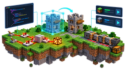

Die Minecraft-AG wendet sich an Schüler und Schülerinnen, die Interesse an Minecraft haben.
Sie bietet die Möglichkeit, gemeinsam in Minecraft zu bauen, zu spielen und zu lernen,
wie man Redstone-Schaltungen entwickelt und Prozesse automatisiert.
Aus der AG werden geeignete Mitglieder für die AG Young Engineers ausgewählt.
In dieser Rubrik sammeln und stellen wir relevante Informationen, Anleitungen und Ressourcen rund um Minecraft bereit. Der Schwerpunkt liegt auf dem Bauen, dem Einsatz von Redstone und der Automatisierung von Prozessen in Minecraft.

Wir nutzen aktuell Minecraft: Java Edition 26.2 mit ausgewählten Mods
Unsere Minecraft-Welten gestalten wir mit WorldEdit effektiv.
Mit den Modulen 3D Design und Codeblocks der Tinkercad-Plattform entwerfen wir eigene Modelle für Minecraft. ( Tinkercad meets Minecraft )
Minecraft-Welten mit Python programmieren (Anleitung)
Die Beretstellung und Verwaltung verschiedener Minecraft-Installationen, Instanzen und Mods erfolgt mit unserem MultiMC-basierten Launcher.